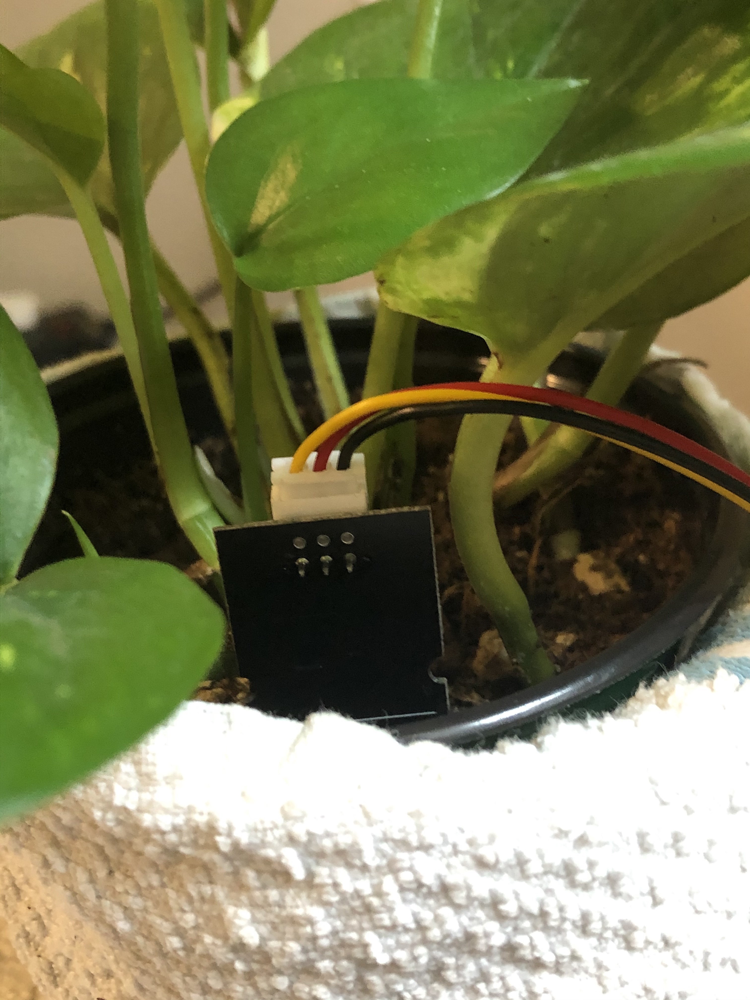
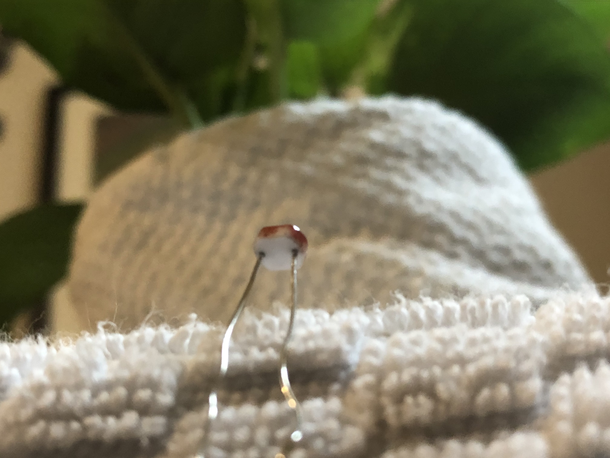
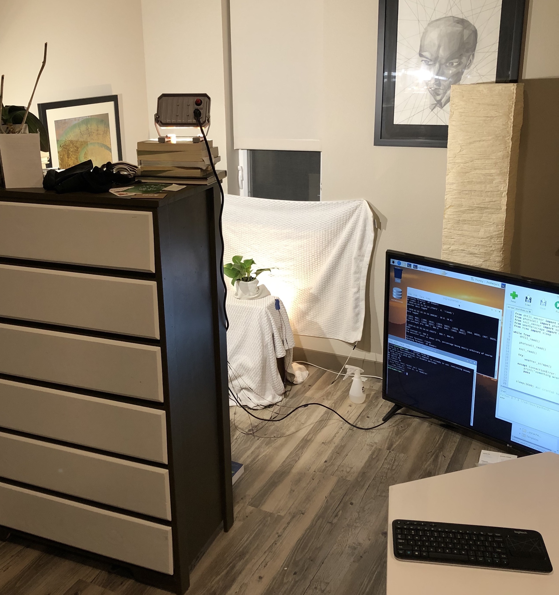

Bradley Scherer
contact: bradleydscherer@gmail.com
All photos taken by me unless otherwise specified
Like many other amateur houseplant moms/dads, I find myself in a bit of a moral dilemma. The more love I give to growing houseplants, the more I buy and eventually overwater, or let sit while on vacation for a week, and eventually, inevitably, let die. I must face the consequence of killing these little lifeforms. While it would be practical to simply pay more attention to their care and develop a green thumb by feeling the soil and listening to the land, I've decided with the nuclear option: a full fledged digital monitoring system complete with computer visualization to track the plant's condition at every hour of the day.

I now keep a running tally of the temperature and humidity (
dht11 sensor
), light exposure (
cds photocell
), weather conditions (
darksky
and
weather.com
), soil moisture (
capacative soil moisture sensor
),
and physical size and color (
PlantCV
) of the plant.

These readings serve to visualize how the harsh elements of my apartment are affecting my plant's life cycle. Using this web server I, and the general public, can view the different conditions my plant has been subject to as well as how it has fared despite them, immortalized in temporary-data-time. I am hoping this new plant studio will keep me accountable for my plant-tending mistakes (there are surely many to come).
There is a plant. There is a raspberry pi that takes pictures of a plant. There is a script that runs on the pi that automates the picture taking and sends those pictures through an analysis pipeline, PlantCV, directly in a virtual environment on the pi.
PlantCV is an opensource plant phenotyping project headed by the Danforth Plant Science Center, that uses OpenCV to digitally visualize plant images and report information on their dimensions and color (among other things).
To standardize lighting, an IOT relay directs current to two car lights to turn on at regular intervals (4am, when it's consistently dark) for image capture.

After captured images are run through the pipeline, their data is saved to a local sqlite3 database in my pi's home environment. Output images are saved to a self-updating directory for storage. Dimensional and color measurements in the sqlite database are supplemented with sensory information provided from three sources: cds photocell, capacitive soil moisture sensor, and dht11 temp/humidity sensor. These three sensors use analog current, which unfortunately must be converted into digital signal (via an MCP 3008 converter) to be properly read by the raspberry pi.
An hourly script records average measurements from each sensor along with weather data collected from the darksky api. Alongside these processes, the pi sends its database to an external heroku web server to update changes in the plant presented on this very site. The directory is linked to my github repository which automatically updates the server when changes are made and pushed to master.
This project has largely been a learning experience for me to dig into the basics of software and web development. Having graduated with a degree in Biology, I feel that computation will push the frontiers of biological study and will require a strong understanding of big data: both how to collect it, store it, and manipulate it. Doing so in real time helps to guide the course of experiments which require prompt results to inform future decisions, many of which must be made during the period of funding amid the experiment. Alternatively the world is becoming more and more automated and at least a cursory understanding of the mechanisms behind this automation should help with navigating the bizarre future we are unfolding.
Having graduated with an arts degree in Biology, I am sensitive to the way scientific results are presented and disseminated, and strongly believe that such results should be more accessible and digestible to the public. Creating a semi-interactive website designed to show people how a house plant is doing is my mulling over a path towards blending these two seemingly disparate spheres.
Photo_Synthesis has provided me an opportunity to become proficient with Python for writing concept programs, become familiar with the flora of front end languages to custom design my own webpages/ presentations of information, and understand the logic of how databases are created, maintained, and implemented in web applications. Working on this project has largely directed my self teaching of code to facilitate some of the structure of the bootcamps that are quickly spreading for fresh code upstarts.
Further this project would not be possible without access to opensource code and free online education. Through academia I have not felt the level of ownership of my work as I have during this process, and have always wondered how accessible learning new skills are over free resources readily available online. While I was fortunate enough to have the time and resources to fully focus on this project, I believe that online learning is in many ways as valid as an education gained from more traditional institutions. Self directed learning helps you to discover your interests, and can motivate you to learn about career paths that more accurately fit the lifestyle you thrive under. In many ways this project is a love letter to opensource projects and the access of free information.
This project has come to its natural resting point. I have a live way of collecting and presenting data, but to answer questions of greater importance, the scale of the data involved must be drastically larger. I like to think of this project as a means of understanding some of the skeleton that goes into data collection and presentation. From this point I hope to either learn more of the nuances of plant science to ask questions more relevant to plant health, production, or functioning. I would also like to understand how larger scale data architecture is built and directed in production grade workflows to answer biological questions. Digging into the software also presents interesting questions. I believe I sit at the precipice at the numerous intersections of biology and computer science and am excited to keep learning!